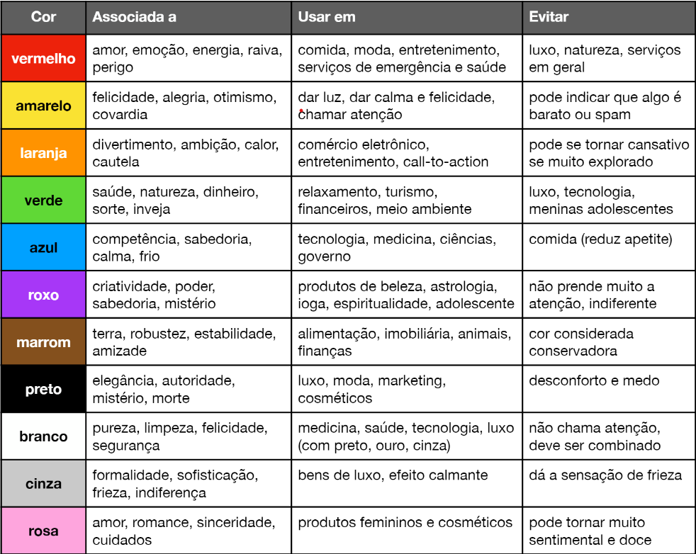
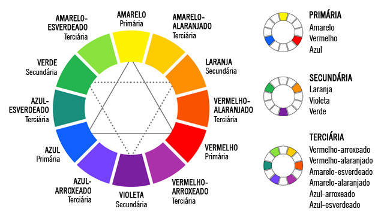
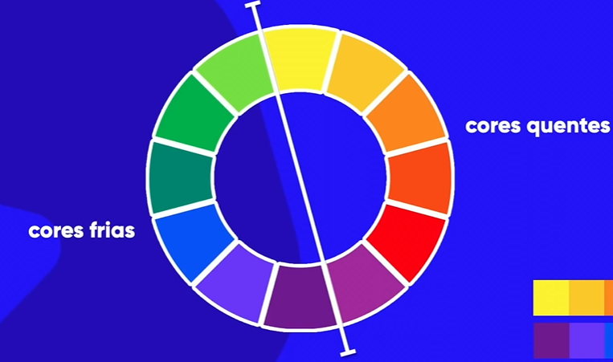
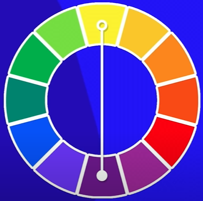
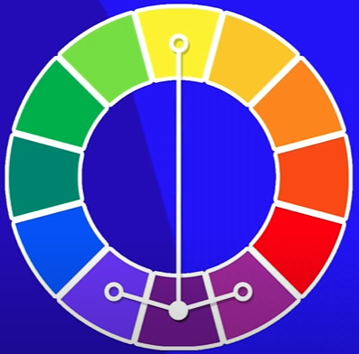
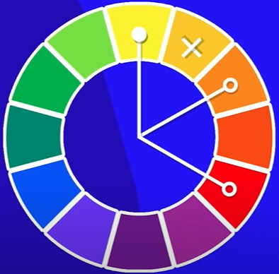
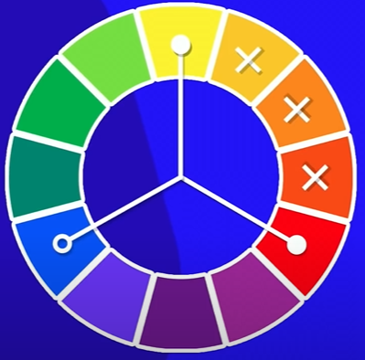
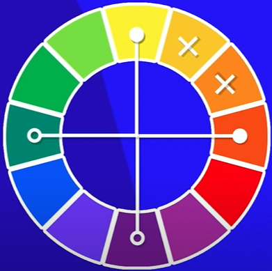
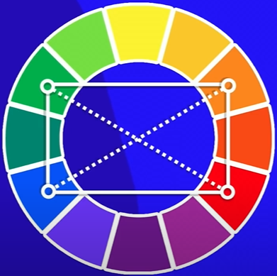
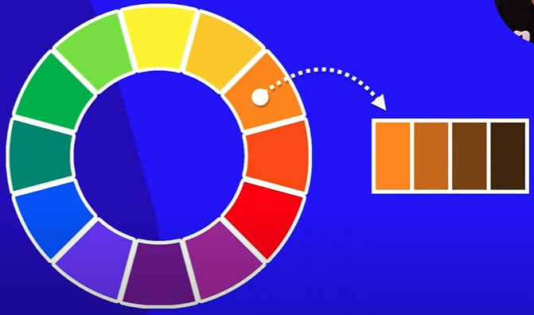

A paleta de um site é formada de 3 a 5 cores
o site da color.adobe.com fornece gratuitamente uma ferramenta que auxilia a gerar uma paleta de cores, de acordo com os tipos abaixo e com os códigos para uso. Também permite extrair a paleta de uma imagem, além de poder usar paletas pré-definidas do site
o site paletton.com também oferece montagem de harmonia, e ainda dá um site exemplo onde ele sugere onde aplicar cada cor
o site coolors.co gera paletas aleaórias apertando espaço, e a ao encontrar uma cor desejada, basta bloqueá-la e continuar randomizando até obter a paleta ideal
Com a extensão do Chrome Colorzilla, você pode extrair a cor que você achou ideal de um site

São as cores que possuem mais contraste entre si. Para localizar a cor complementar, só identificar a que fica imediatamente oposta à cor em questão no círculo cromático

Não possuem muito contraste entre si mas é perceptível a diferença. Para localizar as cores análogas, basta selecionar as vizinhas de ambos os lados.
Para incrementar a paleta e ainda ter um contraste, basta usar o mesmo conceito anteriores.

As análogas com complementar criam um contraste muito forte, esta cria um contraste mais sutil. Para encontrar, escolha 2 cores análogas, pule uma cor da paleta, e escolha a próxima.

semelhante a anterior, mas com um contraste um pouco mais forte entre as cores.

Relaciona os grupos de cores entre si. (primárias/Secundárias/Terciárias)

A escolha dessas cores forma um quadrado no circulo cromático, quando se quer utilizar cores fortes e bem balanceadas

escolher 2 cores e outras 2 que representem seus constrastes.

Escolher uma cor e manipular a saturação e a luminosidade para obter tons semelhantes
